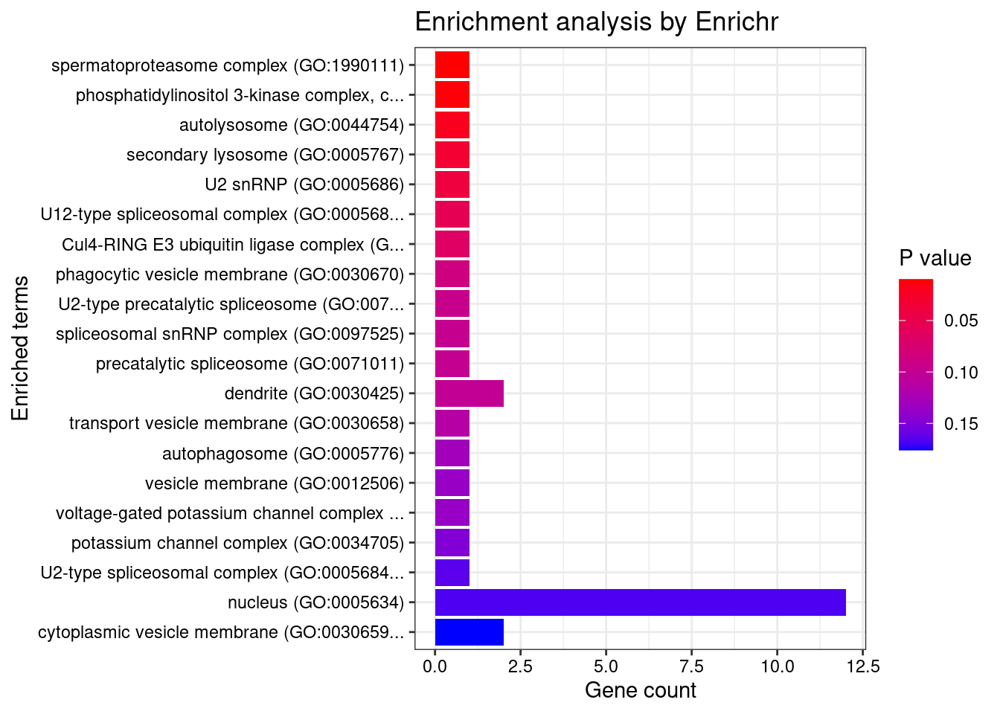
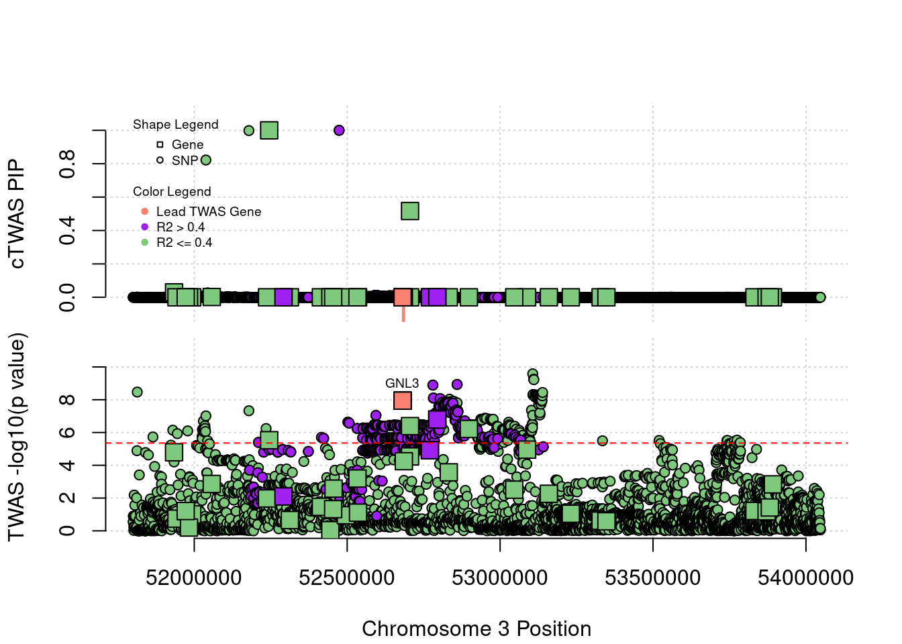

BMI - Brain Frontal Cortex BA9
sheng Qian
2021-2-6
Last updated: 2022-02-22
Checks: 6 1
Knit directory: cTWAS_analysis/
This reproducible R Markdown analysis was created with workflowr (version 1.6.2). The Checks tab describes the reproducibility checks that were applied when the results were created. The Past versions tab lists the development history.
Great! Since the R Markdown file has been committed to the Git repository, you know the exact version of the code that produced these results.
Great job! The global environment was empty. Objects defined in the global environment can affect the analysis in your R Markdown file in unknown ways. For reproduciblity it’s best to always run the code in an empty environment.
The command set.seed(20211220) was run prior to running the code in the R Markdown file. Setting a seed ensures that any results that rely on randomness, e.g. subsampling or permutations, are reproducible.
Great job! Recording the operating system, R version, and package versions is critical for reproducibility.
Nice! There were no cached chunks for this analysis, so you can be confident that you successfully produced the results during this run.
Using absolute paths to the files within your workflowr project makes it difficult for you and others to run your code on a different machine. Change the absolute path(s) below to the suggested relative path(s) to make your code more reproducible.
| absolute | relative |
|---|---|
| /project2/xinhe/shengqian/cTWAS/cTWAS_analysis/data/ | data |
| /project2/xinhe/shengqian/cTWAS/cTWAS_analysis/code/ctwas_config.R | code/ctwas_config.R |
Great! You are using Git for version control. Tracking code development and connecting the code version to the results is critical for reproducibility.
The results in this page were generated with repository version 753dc32. See the Past versions tab to see a history of the changes made to the R Markdown and HTML files.
Note that you need to be careful to ensure that all relevant files for the analysis have been committed to Git prior to generating the results (you can use wflow_publish or wflow_git_commit). workflowr only checks the R Markdown file, but you know if there are other scripts or data files that it depends on. Below is the status of the Git repository when the results were generated:
Ignored files:
Ignored: .ipynb_checkpoints/
Untracked files:
Untracked: Rplot.png
Untracked: analysis/.ipynb_checkpoints/
Untracked: analysis/BMI_Brain_Amygdala_S.Rmd
Untracked: analysis/BMI_Brain_Anterior_cingulate_cortex_BA24_S.Rmd
Untracked: analysis/BMI_Brain_Caudate_basal_ganglia_S.Rmd
Untracked: analysis/BMI_Brain_Cerebellar_Hemisphere_S.Rmd
Untracked: analysis/BMI_Brain_Cerebellum_S.Rmd
Untracked: analysis/BMI_Brain_Cortex_S.Rmd
Untracked: analysis/BMI_Brain_Frontal_Cortex_BA9_S.Rmd
Untracked: analysis/BMI_Brain_Hippocampus_S.Rmd
Untracked: analysis/BMI_Brain_Hypothalamus_S.Rmd
Untracked: analysis/BMI_Brain_Nucleus_accumbens_basal_ganglia_S.Rmd
Untracked: analysis/BMI_Brain_Spinal_cord_cervical_c-1_S.Rmd
Untracked: analysis/BMI_Brain_Substantia_nigra_S.Rmd
Untracked: analysis/Glucose_Adipose_Subcutaneous.Rmd
Untracked: analysis/Glucose_Adipose_Visceral_Omentum.Rmd
Untracked: analysis/Splicing_Test.Rmd
Untracked: code/.ipynb_checkpoints/
Untracked: code/AF_out/
Untracked: code/BMI_S_out/
Untracked: code/BMI_out/
Untracked: code/Glucose_out/
Untracked: code/LDL_S_out/
Untracked: code/T2D_out/
Untracked: code/ctwas_config.R
Untracked: code/mapping.R
Untracked: code/out/
Untracked: code/run_AF_analysis.sbatch
Untracked: code/run_AF_analysis.sh
Untracked: code/run_AF_ctwas_rss_LDR.R
Untracked: code/run_BMI_analysis.sbatch
Untracked: code/run_BMI_analysis.sh
Untracked: code/run_BMI_analysis_S.sbatch
Untracked: code/run_BMI_analysis_S.sh
Untracked: code/run_BMI_ctwas_rss_LDR.R
Untracked: code/run_BMI_ctwas_rss_LDR_S.R
Untracked: code/run_Glucose_analysis.sbatch
Untracked: code/run_Glucose_analysis.sh
Untracked: code/run_Glucose_ctwas_rss_LDR.R
Untracked: code/run_LDL_analysis_S.sbatch
Untracked: code/run_LDL_analysis_S.sh
Untracked: code/run_LDL_ctwas_rss_LDR_S.R
Untracked: code/run_T2D_analysis.sbatch
Untracked: code/run_T2D_analysis.sh
Untracked: code/run_T2D_ctwas_rss_LDR.R
Untracked: data/.ipynb_checkpoints/
Untracked: data/AF/
Untracked: data/BMI/
Untracked: data/BMI_S/
Untracked: data/Glucose/
Untracked: data/LDL_S/
Untracked: data/T2D/
Untracked: data/TEST/
Untracked: data/UKBB/
Untracked: data/UKBB_SNPs_Info.text
Untracked: data/gene_OMIM.txt
Untracked: data/gene_pip_0.8.txt
Untracked: data/mashr_Heart_Atrial_Appendage.db
Untracked: data/mashr_sqtl/
Untracked: data/summary_known_genes_annotations.xlsx
Untracked: data/untitled.txt
Note that any generated files, e.g. HTML, png, CSS, etc., are not included in this status report because it is ok for generated content to have uncommitted changes.
These are the previous versions of the repository in which changes were made to the R Markdown (analysis/BMI_Brain_Frontal_Cortex_BA9.Rmd) and HTML (docs/BMI_Brain_Frontal_Cortex_BA9.html) files. If you’ve configured a remote Git repository (see ?wflow_git_remote), click on the hyperlinks in the table below to view the files as they were in that past version.
| File | Version | Author | Date | Message |
|---|---|---|---|---|
| html | fb4611b | sq-96 | 2022-02-21 | Build site. |
| html | 9824912 | sq-96 | 2022-02-20 | Build site. |
| Rmd | 43d1820 | sq-96 | 2022-02-20 | update |
| html | 91f38fa | sq-96 | 2022-02-13 | Build site. |
| Rmd | eb13ecf | sq-96 | 2022-02-13 | update |
| html | e6bc169 | sq-96 | 2022-02-13 | Build site. |
| Rmd | 87fee8b | sq-96 | 2022-02-13 | update |
Weight QC
#number of imputed weights
nrow(qclist_all)[1] 11472#number of imputed weights by chromosome
table(qclist_all$chr)
1 2 3 4 5 6 7 8 9 10 11 12 13 14 15 16
1144 832 640 455 556 662 528 439 419 459 689 634 234 371 365 512
17 18 19 20 21 22
717 176 886 353 119 282 #number of imputed weights without missing variants
sum(qclist_all$nmiss==0)[1] 8962#proportion of imputed weights without missing variants
mean(qclist_all$nmiss==0)[1] 0.7812Check convergence of parameters

#estimated group prior
estimated_group_prior <- group_prior_rec[,ncol(group_prior_rec)]
names(estimated_group_prior) <- c("gene", "snp")
estimated_group_prior["snp"] <- estimated_group_prior["snp"]*thin #adjust parameter to account for thin argument
print(estimated_group_prior) gene snp
0.0067252 0.0002911 #estimated group prior variance
estimated_group_prior_var <- group_prior_var_rec[,ncol(group_prior_var_rec)]
names(estimated_group_prior_var) <- c("gene", "snp")
print(estimated_group_prior_var) gene snp
25.11 17.26 #report sample size
print(sample_size)[1] 336107#report group size
group_size <- c(nrow(ctwas_gene_res), n_snps)
print(group_size)[1] 11472 7535010#estimated group PVE
estimated_group_pve <- estimated_group_prior_var*estimated_group_prior*group_size/sample_size #check PVE calculation
names(estimated_group_pve) <- c("gene", "snp")
print(estimated_group_pve) gene snp
0.005764 0.112682 #compare sum(PIP*mu2/sample_size) with above PVE calculation
c(sum(ctwas_gene_res$PVE),sum(ctwas_snp_res$PVE))[1] 0.3711 15.5333Genes with highest PIPs
| Version | Author | Date |
|---|---|---|
| 9824912 | sq-96 | 2022-02-20 |
genename region_tag susie_pip mu2 PVE z num_eqtl
8994 NEGR1 1_46 1.0000 17779.39 5.290e-02 -10.657 2
13051 RP11-490G2.2 1_60 1.0000 33092.91 9.846e-02 5.044 1
10446 GSAP 7_49 1.0000 32937.39 9.800e-02 5.260 1
751 MAPK6 15_21 1.0000 35089.11 1.044e-01 -4.600 1
7741 PPM1M 3_36 1.0000 247.30 7.358e-04 4.675 3
3673 FLT3 13_7 0.9523 33.57 9.512e-05 -5.360 1
979 PIK3C3 18_23 0.9326 52.82 1.466e-04 6.864 2
8027 CASP7 10_71 0.8054 25.18 6.035e-05 4.610 2
9305 ASPHD1 16_24 0.7995 119.96 2.854e-04 -11.938 1
3823 PREX1 20_30 0.7871 34.78 8.145e-05 5.634 1
1486 RASSF7 11_1 0.7687 22.53 5.153e-05 3.477 1
5622 C18orf8 18_12 0.7675 60.95 1.392e-04 7.723 3
5021 DCAF7 17_37 0.7484 28.87 6.429e-05 5.437 1
10039 KCNB2 8_53 0.7452 66.52 1.475e-04 -8.226 1
12703 CTC-467M3.3 5_52 0.7200 90.78 1.945e-04 9.482 1
2989 IFT57 3_67 0.7135 44.79 9.508e-05 -5.822 2
13296 AARSD1 17_25 0.7088 33.54 7.073e-05 5.542 1
4728 YWHAQ 2_6 0.6955 26.36 5.455e-05 4.911 1
6022 ECE2 3_113 0.6950 29.99 6.201e-05 -5.305 1
10781 SF3B3 16_37 0.6811 35.86 7.266e-05 -6.852 1Genes with largest effect sizes
| Version | Author | Date |
|---|---|---|
| 9824912 | sq-96 | 2022-02-20 |
genename region_tag susie_pip mu2 PVE z num_eqtl
9 SEMA3F 3_35 0.000e+00 72070 0.000e+00 7.681 1
10678 SLC38A3 3_35 0.000e+00 67358 0.000e+00 6.726 1
7734 CAMKV 3_35 0.000e+00 52493 0.000e+00 -10.226 2
7917 CCDC171 9_13 0.000e+00 50279 0.000e+00 8.023 2
1462 MAST3 19_14 0.000e+00 42245 0.000e+00 6.953 2
31 RBM5 3_35 0.000e+00 42133 0.000e+00 12.473 1
41 RBM6 3_35 0.000e+00 40749 0.000e+00 12.536 1
751 MAPK6 15_21 1.000e+00 35089 1.044e-01 -4.600 1
8150 LEO1 15_21 2.603e-03 34888 2.702e-04 4.603 1
13051 RP11-490G2.2 1_60 1.000e+00 33093 9.846e-02 5.044 1
10446 GSAP 7_49 1.000e+00 32937 9.800e-02 5.260 1
6317 CNNM2 10_66 0.000e+00 31589 0.000e+00 -5.981 2
5488 MFAP1 15_16 7.668e-04 23547 5.372e-05 4.303 1
12490 HYPK 15_16 6.638e-06 23445 4.631e-07 4.322 1
7732 RNF123 3_35 0.000e+00 23053 0.000e+00 -10.957 1
11029 MRPL21 11_38 0.000e+00 22517 0.000e+00 4.215 2
1379 WDR76 15_16 0.000e+00 21367 0.000e+00 4.687 2
11910 CKMT1A 15_16 0.000e+00 21087 0.000e+00 4.130 1
9680 DHFR2 3_59 0.000e+00 17796 0.000e+00 3.266 3
8994 NEGR1 1_46 1.000e+00 17779 5.290e-02 -10.657 2Genes with highest PVE
genename region_tag susie_pip mu2 PVE z num_eqtl
751 MAPK6 15_21 1.000000 35089.11 1.044e-01 -4.600 1
13051 RP11-490G2.2 1_60 1.000000 33092.91 9.846e-02 5.044 1
10446 GSAP 7_49 1.000000 32937.39 9.800e-02 5.260 1
8994 NEGR1 1_46 1.000000 17779.39 5.290e-02 -10.657 2
10925 TTC30B 2_107 0.349013 762.39 7.917e-04 -3.137 1
7741 PPM1M 3_36 1.000000 247.30 7.358e-04 4.675 3
3029 SPCS1 3_36 0.516681 361.49 5.557e-04 -5.067 1
9305 ASPHD1 16_24 0.799534 119.96 2.854e-04 -11.938 1
8150 LEO1 15_21 0.002603 34887.56 2.702e-04 4.603 1
12703 CTC-467M3.3 5_52 0.720017 90.78 1.945e-04 9.482 1
10039 KCNB2 8_53 0.745172 66.52 1.475e-04 -8.226 1
979 PIK3C3 18_23 0.932638 52.82 1.466e-04 6.864 2
5622 C18orf8 18_12 0.767469 60.95 1.392e-04 7.723 3
6868 GPR61 1_67 0.582832 80.07 1.389e-04 8.755 1
8172 MC4R 18_34 0.344096 130.50 1.336e-04 13.312 1
5343 G3BP2 4_51 0.360464 121.38 1.302e-04 -2.134 1
7387 TAL1 1_29 0.666872 48.92 9.705e-05 -6.745 2
3673 FLT3 13_7 0.952277 33.57 9.512e-05 -5.360 1
2989 IFT57 3_67 0.713549 44.79 9.508e-05 -5.822 2
5424 SUOX 12_35 0.519005 58.30 9.003e-05 -5.807 1Genes with largest z scores
genename region_tag susie_pip mu2 PVE z num_eqtl
8172 MC4R 18_34 0.344096 130.50 1.336e-04 13.312 1
41 RBM6 3_35 0.000000 40748.94 0.000e+00 12.536 1
31 RBM5 3_35 0.000000 42132.93 0.000e+00 12.473 1
9305 ASPHD1 16_24 0.799534 119.96 2.854e-04 -11.938 1
6407 TAOK2 16_24 0.051558 125.44 1.924e-05 11.849 1
7736 MST1R 3_35 0.000000 6793.57 0.000e+00 -11.803 2
9306 KCTD13 16_24 0.033411 112.45 1.118e-05 11.491 1
9304 SEZ6L2 16_24 0.020287 110.70 6.682e-06 -11.407 1
7732 RNF123 3_35 0.000000 23052.76 0.000e+00 -10.957 1
8634 INO80E 16_24 0.023304 98.36 6.820e-06 10.794 2
8994 NEGR1 1_46 1.000000 17779.39 5.290e-02 -10.657 2
10707 CLN3 16_23 0.089642 68.19 1.819e-05 10.453 1
7734 CAMKV 3_35 0.000000 52493.18 0.000e+00 -10.226 2
12221 RP11-196G11.6 16_24 0.336710 81.09 8.123e-05 10.128 1
11002 SULT1A2 16_23 0.040750 64.26 7.791e-06 -10.075 2
12241 NPIPB7 16_23 0.029322 65.41 5.706e-06 10.038 1
8290 ZNF646 16_24 0.081105 77.81 1.878e-05 -10.000 1
2891 COL4A3BP 5_44 0.022154 72.01 4.747e-06 -9.828 1
10737 SKOR1 15_31 0.542610 52.50 8.476e-05 -9.635 1
8993 C1QTNF4 11_29 0.008762 87.67 2.286e-06 9.564 1Comparing z scores and PIPs

| Version | Author | Date |
|---|---|---|
| 9824912 | sq-96 | 2022-02-20 |
| Version | Author | Date |
|---|---|---|
| 9824912 | sq-96 | 2022-02-20 |
[1] 0.02223 genename region_tag susie_pip mu2 PVE z num_eqtl
8172 MC4R 18_34 0.344096 130.50 1.336e-04 13.312 1
41 RBM6 3_35 0.000000 40748.94 0.000e+00 12.536 1
31 RBM5 3_35 0.000000 42132.93 0.000e+00 12.473 1
9305 ASPHD1 16_24 0.799534 119.96 2.854e-04 -11.938 1
6407 TAOK2 16_24 0.051558 125.44 1.924e-05 11.849 1
7736 MST1R 3_35 0.000000 6793.57 0.000e+00 -11.803 2
9306 KCTD13 16_24 0.033411 112.45 1.118e-05 11.491 1
9304 SEZ6L2 16_24 0.020287 110.70 6.682e-06 -11.407 1
7732 RNF123 3_35 0.000000 23052.76 0.000e+00 -10.957 1
8634 INO80E 16_24 0.023304 98.36 6.820e-06 10.794 2
8994 NEGR1 1_46 1.000000 17779.39 5.290e-02 -10.657 2
10707 CLN3 16_23 0.089642 68.19 1.819e-05 10.453 1
7734 CAMKV 3_35 0.000000 52493.18 0.000e+00 -10.226 2
12221 RP11-196G11.6 16_24 0.336710 81.09 8.123e-05 10.128 1
11002 SULT1A2 16_23 0.040750 64.26 7.791e-06 -10.075 2
12241 NPIPB7 16_23 0.029322 65.41 5.706e-06 10.038 1
8290 ZNF646 16_24 0.081105 77.81 1.878e-05 -10.000 1
2891 COL4A3BP 5_44 0.022154 72.01 4.747e-06 -9.828 1
10737 SKOR1 15_31 0.542610 52.50 8.476e-05 -9.635 1
8993 C1QTNF4 11_29 0.008762 87.67 2.286e-06 9.564 1GO enrichment analysis for genes with PIP>0.5
#number of genes for gene set enrichment
length(genes)[1] 40Uploading data to Enrichr... Done.
Querying GO_Biological_Process_2021... Done.
Querying GO_Cellular_Component_2021... Done.
Querying GO_Molecular_Function_2021... Done.
Parsing results... Done.
[1] "GO_Biological_Process_2021"
| Version | Author | Date |
|---|---|---|
| 9824912 | sq-96 | 2022-02-20 |
[1] Term Overlap Adjusted.P.value Genes
<0 rows> (or 0-length row.names)
[1] "GO_Cellular_Component_2021"
| Version | Author | Date |
|---|---|---|
| 9824912 | sq-96 | 2022-02-20 |
[1] Term Overlap Adjusted.P.value Genes
<0 rows> (or 0-length row.names)
[1] "GO_Molecular_Function_2021"
| Version | Author | Date |
|---|---|---|
| 9824912 | sq-96 | 2022-02-20 |
[1] Term Overlap Adjusted.P.value Genes
<0 rows> (or 0-length row.names)DisGeNET enrichment analysis for genes with PIP>0.5
Description FDR Ratio BgRatio
39 Sulfite oxidase deficiency 0.02288 1/18 1/9703
42 Acute myeloid leukemia, minimal differentiation 0.02288 1/18 1/9703
63 Sulfocysteinuria 0.02288 1/18 1/9703
65 FANCONI ANEMIA, COMPLEMENTATION GROUP P 0.02288 1/18 1/9703
72 OROFACIODIGITAL SYNDROME XVIII 0.02288 1/18 1/9703
74 PROTEASOME-ASSOCIATED AUTOINFLAMMATORY SYNDROME 1 0.02288 1/18 1/9703
15 Childhood Acute Lymphoblastic Leukemia 0.02613 2/18 52/9703
16 L2 Acute Lymphoblastic Leukemia 0.02613 2/18 50/9703
18 Leukemia, Myelocytic, Acute 0.02613 3/18 173/9703
50 Nakajo syndrome 0.02613 1/18 2/9703WebGestalt enrichment analysis for genes with PIP>0.5
Loading the functional categories...
Loading the ID list...
Loading the reference list...
Performing the enrichment analysis...Warning in oraEnrichment(interestGeneList, referenceGeneList, geneSet, minNum =
minNum, : No significant gene set is identified based on FDR 0.05!NULLPIP Manhattan Plot
Warning: ggrepel: 1 unlabeled data points (too many overlaps). Consider
increasing max.overlaps
| Version | Author | Date |
|---|---|---|
| 9824912 | sq-96 | 2022-02-20 |
Sensitivity, specificity and precision for silver standard genes
#number of genes in known annotations
print(length(known_annotations))[1] 41#number of genes in known annotations with imputed expression
print(sum(known_annotations %in% ctwas_gene_res$genename))[1] 26#significance threshold for TWAS
print(sig_thresh)[1] 4.594#number of ctwas genes
length(ctwas_genes)[1] 8#number of TWAS genes
length(twas_genes)[1] 255#show novel genes (ctwas genes with not in TWAS genes)
ctwas_gene_res[ctwas_gene_res$genename %in% novel_genes,report_cols][1] genename region_tag susie_pip mu2 PVE z num_eqtl
<0 rows> (or 0-length row.names)#sensitivity / recall
print(sensitivity) ctwas TWAS
0.02439 0.12195 #specificity
print(specificity) ctwas TWAS
0.9994 0.9782 #precision / PPV
print(precision) ctwas TWAS
0.12500 0.01961
| Version | Author | Date |
|---|---|---|
| 9824912 | sq-96 | 2022-02-20 |
Locus Plots - 3_36

| Version | Author | Date |
|---|---|---|
| 9824912 | sq-96 | 2022-02-20 |
sessionInfo()R version 3.6.1 (2019-07-05)
Platform: x86_64-pc-linux-gnu (64-bit)
Running under: Scientific Linux 7.4 (Nitrogen)
Matrix products: default
BLAS/LAPACK: /software/openblas-0.2.19-el7-x86_64/lib/libopenblas_haswellp-r0.2.19.so
locale:
[1] LC_CTYPE=en_US.UTF-8 LC_NUMERIC=C
[3] LC_TIME=en_US.UTF-8 LC_COLLATE=en_US.UTF-8
[5] LC_MONETARY=en_US.UTF-8 LC_MESSAGES=en_US.UTF-8
[7] LC_PAPER=en_US.UTF-8 LC_NAME=C
[9] LC_ADDRESS=C LC_TELEPHONE=C
[11] LC_MEASUREMENT=en_US.UTF-8 LC_IDENTIFICATION=C
attached base packages:
[1] stats graphics grDevices utils datasets methods base
other attached packages:
[1] readxl_1.3.1 forcats_0.5.1 stringr_1.4.0 dplyr_1.0.7
[5] purrr_0.3.4 readr_2.1.1 tidyr_1.1.4 tidyverse_1.3.1
[9] tibble_3.1.6 WebGestaltR_0.4.4 disgenet2r_0.99.2 enrichR_3.0
[13] cowplot_1.0.0 ggplot2_3.3.5 workflowr_1.6.2
loaded via a namespace (and not attached):
[1] fs_1.5.2 lubridate_1.8.0 bit64_4.0.5 doParallel_1.0.16
[5] httr_1.4.2 rprojroot_2.0.2 tools_3.6.1 backports_1.4.1
[9] doRNG_1.8.2 utf8_1.2.2 R6_2.5.1 vipor_0.4.5
[13] DBI_1.1.1 colorspace_2.0-2 withr_2.4.3 ggrastr_1.0.1
[17] tidyselect_1.1.1 bit_4.0.4 curl_4.3.2 compiler_3.6.1
[21] git2r_0.26.1 cli_3.1.0 rvest_1.0.2 Cairo_1.5-12.2
[25] xml2_1.3.3 labeling_0.4.2 scales_1.1.1 apcluster_1.4.8
[29] digest_0.6.29 rmarkdown_2.11 svglite_1.2.2 pkgconfig_2.0.3
[33] htmltools_0.5.2 dbplyr_2.1.1 fastmap_1.1.0 highr_0.9
[37] rlang_0.4.12 rstudioapi_0.13 RSQLite_2.2.8 jquerylib_0.1.4
[41] farver_2.1.0 generics_0.1.1 jsonlite_1.7.2 vroom_1.5.7
[45] magrittr_2.0.1 Matrix_1.2-18 ggbeeswarm_0.6.0 Rcpp_1.0.7
[49] munsell_0.5.0 fansi_0.5.0 gdtools_0.1.9 lifecycle_1.0.1
[53] stringi_1.7.6 whisker_0.3-2 yaml_2.2.1 plyr_1.8.6
[57] grid_3.6.1 blob_1.2.2 ggrepel_0.9.1 parallel_3.6.1
[61] promises_1.0.1 crayon_1.4.2 lattice_0.20-38 haven_2.4.3
[65] hms_1.1.1 knitr_1.36 pillar_1.6.4 igraph_1.2.10
[69] rjson_0.2.20 rngtools_1.5.2 reshape2_1.4.4 codetools_0.2-16
[73] reprex_2.0.1 glue_1.5.1 evaluate_0.14 data.table_1.14.2
[77] modelr_0.1.8 vctrs_0.3.8 tzdb_0.2.0 httpuv_1.5.1
[81] foreach_1.5.1 cellranger_1.1.0 gtable_0.3.0 assertthat_0.2.1
[85] cachem_1.0.6 xfun_0.29 broom_0.7.10 later_0.8.0
[89] iterators_1.0.13 beeswarm_0.2.3 memoise_2.0.1 ellipsis_0.3.2